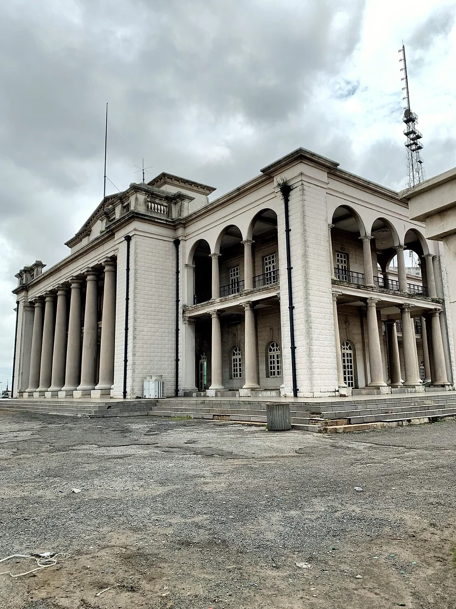
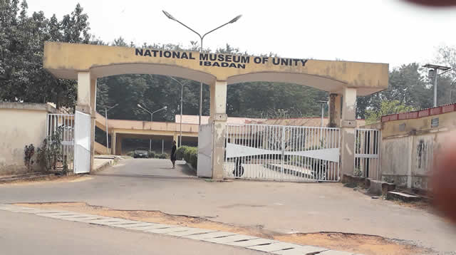

Top 3 activities to do at Ibadan

Explore the Historic Mapo Hall
Mapo Hall is a place to learn about Ibadan's history and enjoy panoramic views of the city from its hilltop location.
Visit the University of Ibadan
The University of Ibadan is a place to stroll through beautiful gardens, visit the Zoological Garden, and explore academic landmarks.

Experience the National Museum
The National Museum of Unity is a place to discover traditional Yoruba art, historical artifacts, and cultural exhibits.